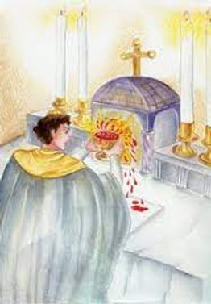
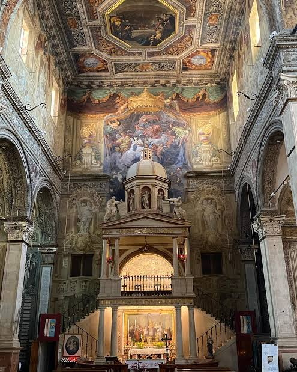

The Eucharistic Miracle of Ferrara occurred on Easter Sunday, March 28, 1171, at the Church of Santa Maria Anteriore in Ferrara, Italy. During the celebration of Mass, a consecrated Host physically gushed real blood, spraying the ceiling vault directly above the altar.
The Event
- The Celebrant: Father Pietro da Verona was celebrating Easter Mass alongside three fellow canons.
- The Moment: At the "Fraction of the Host," a powerful stream of blood spurted from the Host, spraying across the semi-circular stone vault above the altar.
- The Vision: Eyewitnesses reported that the Host took on a deep bloody color, and some perceived the distinct figure of a baby within it.
Preservation & Recognition
In 1501, the blood-spattered ceiling vault was detached from the original church and transferred to the Basilica of Santa Maria in Vado, where it remains enshrined today. The miracle has been formally recognized by several Popes, including Eugene IV, Benedict XIV, and Pius IX.